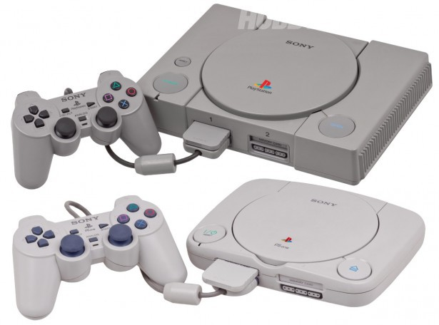
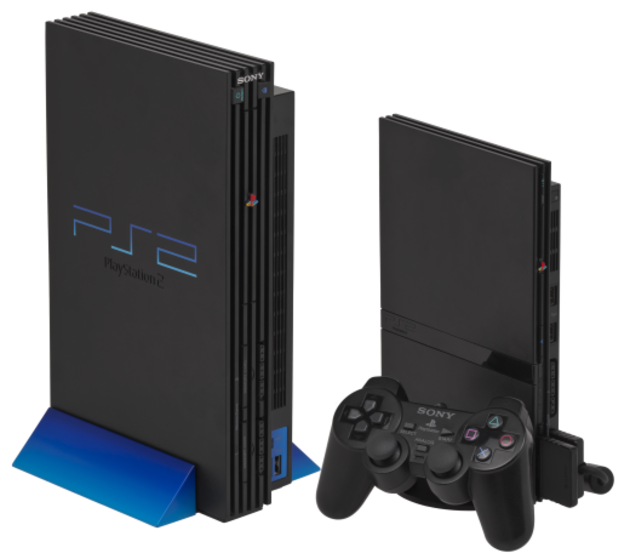
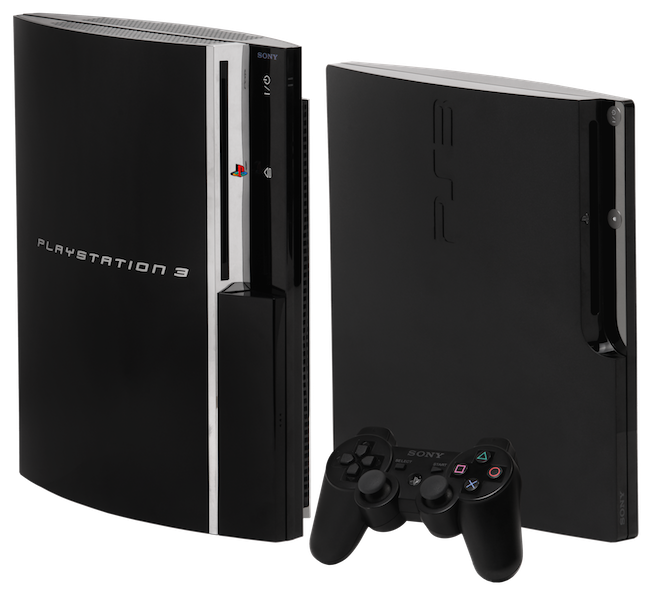

PlayStation es una videoconsola de sobremesa, lanzada por Sony Computer Entertainment el 3 de diciembre de 1994 en Japón. La consola fue pionera en el empleo del CD-ROM como soporte de almacenamiento para sus juegos.

La PlayStation one Tuvo gran éxito en emplear el CD-ROM dentro de su hardware, a pesar de que otras compañías ya lo habían empleado, tales como: SEGA (Sega CD), Panasonic (3DO), Phillips (CD-i), SNK (Neo Geo CD) y Atari (Atari Jaguar). Superó las cien millones de consolas vendidas nueve años después de su lanzamiento.
PlayStation 2 abreviado como PS2, es la segunda videoconsola de sobremesa producida por Sony Computer Entertainment, el PS2 fue la primera consola con disco duro. Fue lanzada por primera vez el 4 de marzo del año 2000 en Japón, y unos meses después en el resto del mundo. Fue descontinuada el 11 de enero de 2013. Desde su salida, la PS2 ha logrado vender más de 160,00 millones de unidades aproximadamente, convirtiéndose en la videoconsola más vendida de la historia.
La PlayStation 3 abreviado como PS3 fue lanzada al mercado por Sony Computer Entertainment, el 11 de noviembre de 2006 en Japón, el 17 de noviembre de 2006 en Norteamérica y el 23 de marzo de 2007 en Europa y Australia. Dos variantes estaban disponibles en el momento del lanzamiento: un modelo básico con 20 GB de disco duro SATA 2,5 y un modelo profesional con disco duro de 60 GB y varias características adicionales como doble número de puertos USB y retrocompatibilidad con juegos de su antecesora PS2 y Playstation one.
La PlayStation 4 abreviado como PS4, es la videoconsola más actual de Sony Computer Entertainment. Su lanzamiento fue el 15 de noviembre de 2013 en Estados Unidos y en Europa y Latinoamérica fue el 29 de noviembre de 2013, mientras que en Japón fue el 22 de febrero de 2014. La PlayStation 4 cuenta con un procesador AMD de 8 núcleos bajo la arquitectura x86-64, incluyen 8 GB de memoria unificada GDDR5, una unidad de disco Blu-ray Disc más rápido, y los chips personalizados dedicados a tareas de procesamiento de audio, vídeo y de fondo.